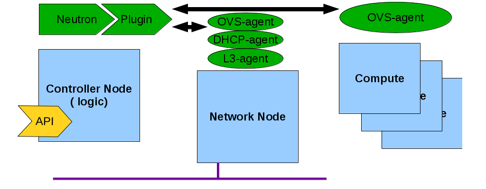

class: center, middle # RHOS 3.0 Quantum <img src="assets/cloud-4-white.png" width="100" /> Jan. 15 2014 - Miguel Ángel Ajo (mangelajo@redhat.com) ??? Introduce yourself, I'm Miguel Ángel Ajo, from Red Hat's Software Defined Networking development team, and I work in neutron, Feel free to ask any question, I don't know it all about neutron, but I can get the answers back to you. --- ## Outline - *quantum* rhos 3.0 = *neutron* rhos>=4.0 - Technical introduction to quantum. - Tenant network isolation and routing. - The future of quantum (aka Neutron) - hands-on: using quantum. --- ## Quantum - Software defined networking - Virtual networks, address provisioning, routing, security groups. .center.small[![][neutron_hilite]] [neutron_hilite]: assets/arch-neutron.png ??? TODO: check RHOS 3.0 IPv6 capabilities IPv6 extended support in RHOS5.0 (Icehouse) --- ## Tenant network isolation - openvswitch-plugin: - VLAN (vlan id) 4096 nets - GRE tunnels (tunnel key = tenant net) 16M nets - VXLAN (RHOS 4.0 ?) 16M nets - ML2 plugin: can combine technologies (RHOS >=4.0) ??? TODO: check RHOS 3.0 has VXLAN too? --- class: center, middle ## The logical view <img src="assets/neutron-logical-view.svg" width="400" /> --- class: center, middle ## The distributed agents  --- class: center, middle ## The physical view <img src="assets/neutron-physical-view.svg" width="600" /> --- class: center,middle ## On the compute host --- ### Instance networking Instance network configuration: # virsh dumpxml instance-00000013 | xmllint --xpath //interface - <interface type="bridge"> <mac address="fa:16:3e:44:8b:7d"/> <source bridge="qbr07d958c4-1f"/> <target dev="tap07d958c4-1f"/> <model type="virtio"/> <driver name="qemu"/> <alias name="net0"/> <address type="pci" domain="0x0000" bus="0x00" slot="0x03" function="0x0"/> </interface> ([Physical view](assets/neutron-physical-view.png)) --- ### Linux bridge device - Instance interface(s) attached to a legacy bridge device to support [iptables][]: # brctl show bridge name bridge id STP enabled interfaces qbr07d958c4-1f 8000.b68af9187be3 no qvb07d958c4-1f tap07d958c4-1f [iptables]: http://docs.openstack.org/network-admin/admin/content/under_the_hood_openvswitch.html ([Physical view](assets/neutron-physical-view.png)) --- ### Creating a private network ```bash $ quantum net-create net1 $ quantum subnet-create net1 192.168.0.0/24 --name subnet1 ``` Picture here --- ### Creating a public network ```bash $ quantum net-create public --router-external=True $ quantum subnet-create public 10.1.1.0/24 --name public_subnet \ --enable_dhcp=False \ --allocation-pool start=10.1.1.48,end=10.1.1.191 \ --gateway=10.1.1.1 ``` Picture here --- ### Routing the private network ```bash $ quantum router-creater router1 $ quantum router-interface-add router1 subnet1 $ quantum router-gateway-set router1 public ``` Picture here --- ### Create a VM --- ### Access the outside world - SNAT (for routed externally routed networks) - DNAT (for externally routed networks + floating IPs) --- ### Floating IPs (DNAT) - First we need to *create* a floating ip address: ```bash $ quantum floatingip-create public ``` ``` +---------------------+--------------------------------------+ | Field | Value | +---------------------+--------------------------------------+ | fixed_ip_address | | | floating_ip_address | 192.168.122.204 | | floating_network_id | 7e687cc3-8155-4ec2-bd11-ba741ecbf4f0 | | id | b61bf481-0eb1-431c-bad4-892a62f9e22e | | port_id | | | router_id | | | tenant_id | db73ba54c4d04066a4c151be0e4ec5de | +---------------------+--------------------------------------+ ``` ??? TODO: adapt IPs to presentation workflow We create a floating IP address, neutron will return an IP address from the specified network (public) where available --- - Then we can assign it to an instance: $ nova add-floating-ip instance0 192.168.122.202 - And we can see that it has been associated with our instance: $ nova floating-ip-list +-----------------+-------------------+----------+--------+ | Ip | Instance Id | Fixed Ip | Pool | +-----------------+-------------------+----------+--------+ | 192.168.122.202 | fde5c340-...bfc33 | 10.0.0.3 | public | +-----------------+-------------------+----------+--------+ --- ### Security groups - They allow egress/ingress rules for protocols, ports, etc. --- ### Accessing your VM from the outside world ```bash $ ping 192.168.122.202 $ ssh root@192.168.122.202 ``` --- class: center, middle # THE END Questions? - Miguel Ángel Ajo (mangelajo@redhat.com) - Javier Peña (jpena@redhat.com)